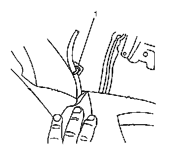
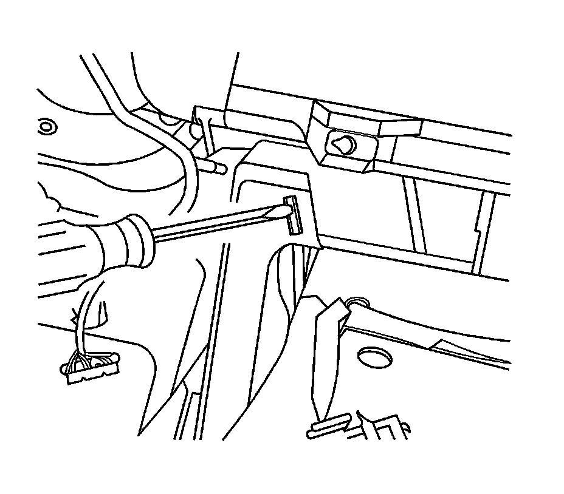
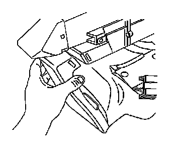
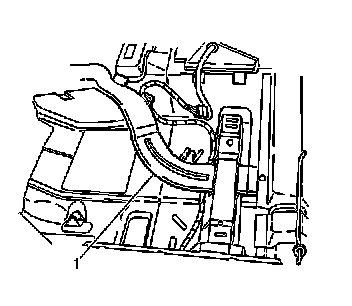

Rear Floor Air Outlet Duct Replacement - Left Side (Right Hand Drive)
Rear Floor Air Outlet Duct Replacement - Left Side (Right Hand Drive)
Removal Procedure
1. Remove the front carpet. Refer to Front Floor Panel Carpet Replacement (Service and Repair) .

2. Disconnect the wiring (1) from the duct.

3. Press the tab to release the duct from the HVAC module.

4. Disconnect the duct from the module.

5. Remove the air outlet duct (1).
Installation Procedure
1. Install the air outlet duct (1).
2. Connect air outlet duct to the HVAC module.
3. Connect the wiring (1) to the duct.
4. Install the front carpet. Refer to Front Floor Panel Carpet Replacement (Service and Repair) .